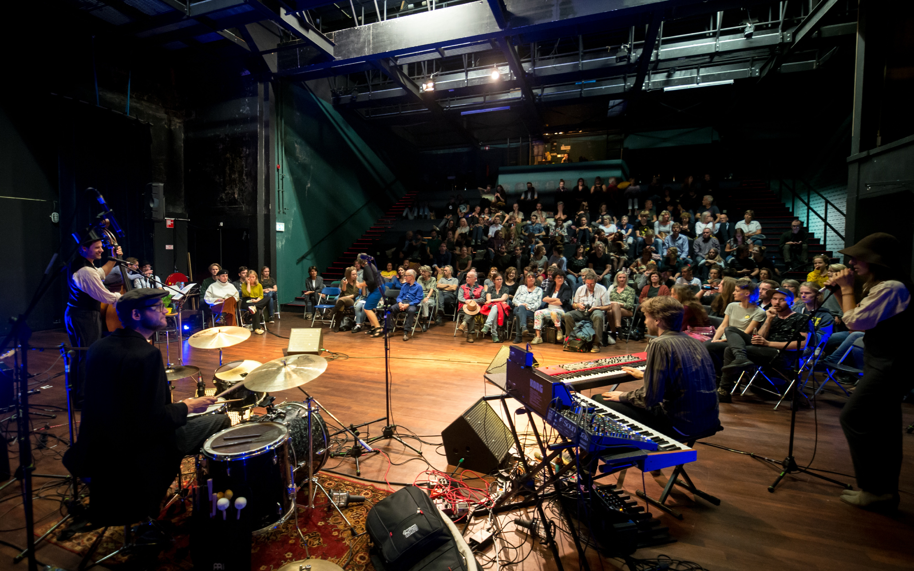

#11 De nostalgische editie
Lamarziendan 11: De Nostalgische Editie
Lamarziendan is neergestreken Bij Katrien aan de Triniteitstraat. De spanning is aanwezig in de foyer, eigenlijk was 20.00 uur het plan. Dus het gevoel van manipulatie is lichtelijk aanwezig. Maar dat legt de baromzet geen windeieren en ondertussen draait Jan Faq een nostalgisch avondplaatje. Dus niets aan het handje. Uiteindelijk gaan de deuren om half negen open. De overvolle foyer trekt leeg en de gasten zoeken een plekje in de zaal. Ja hoor… Pipi Belli speelt een deuntje. Herkenbaar zoals altijd, een paar piepende tonen, de laatste snaren gestemd en het Lamarziendan openingslied wordt ingezet. De temperatuur stijgt. Ook de avond van 16 oktober in 2018 werd heter sinds het begin van de metingen. Een korte uitleg over Lamarziendan volgt. Het kritische doch liefhebbende publiek is toch weer aanwezig zonder ook maar enige kennis te hebben van het programma.
Band: Clittenband - Aya Dupont, Hannah Schuur, Noortje Dupont.
Clittenband is geïntroduceerd. Er wordt gestemd en er is geluid. De ene heeft geluid en de ander heeft gestemd, maar vertelt niet waarop. De gedachten zijn poëtisch en ritmisch aangepast. Het gaat over lama's en wat je ook maar kunt bedenken rondom het woord lama; behoorlijk associatieve rijmpjes. Ook is er een nummer waarop Baudet wordt geromantiseerd in het red-light district van Den Haag (het Binnenhof). Zelfs politiek wordt poëtiek en lavendel (snuiven) erotiek. Nu volgt een passievolle wanhoopskreet naar succes, of is het liefde? Het nummer “Remo check mijn demo” zet in. En als ze het de laatste keer doet met Remo, zegt ze: “Ik wil nog een keer komen voor ik ga.” Genieten van het lekkerste van de liefde, of alles wat daar toe heeft geleid. Prachtige stemmen, fijne band.
Bingo: Jordy Sanchez, Pim Kromhout.
Een oude man wil zonder hulp het podium op. Dit blijkt als hij alle hulp die hem tegemoet komt van zich afslaat met zijn wandelstok. Hij gaat naast een medebewoner achter een bureautje zitten van het bejaardentehuis dat Lamarziendan heet. Er staat een bingo-rad op het bureau. De sekreet van een oude man zegt: “Er is geen geld voor koekjes en thee. Iedereen heeft zijn bingo-kaart gehad maar het geld voor pennen of markeerstiften is ook op.” De bingo gaat van start. Ze houden de prijs nog even geheim. Iedereen probeert de getallen te onthouden die uit het bingo-radje komen. Ze worden opgelezen door de man die best wel eens de opa van Pim geweest zou kunnen zijn. Na een tijdje en een hoop getallen begint de motivatie van de twee bejaarde mannen in te kakken. En plots valt de eerste bingo. Zenuwachtig komt de winnaar van de bingo het podium op. Wat blijkt, de prijs is een liedje zingen. De winnaar druipt langzaam af het publiek in. Wat de kans op een volgende bingo zowat nihil maakte. Zo werden de getallen, zonder nog aan het radje te draaien, van 1 tot 100 maar gewoon heel snel achter elkaar opgenoemd.
Dans: Jeroen en Bernadette – Salsa
Sensuele bewegingen van Jeroen en Bernadette en ritmische muziek van Pipi Belli die het publiek deed wanen in het Cuba van de jaren 70. Elegant en heet als vuurtongen, benutten Jeroen en Bernadette het hele podium en zetten het publiek in lichterlaaie. Geen statische salsa vanaf een plek. Of er nu ingezet werd op de 1ste, 2de , 3de of 4de tel (de Son leeren wij), de passie en het plezier spatten er vanaf en dit allemaal met linksvoor.
Filmmuziek: Maury van Loon & Jesse Immanuel Bom
Een Hallucinogene beleving. Het blauwe beeld met ruis, begeleid door een prachtige compositie van pianomuziek, laat je deel uit te maken van een groter geheel. Er ontstaat minder ruis op het doek naarmate de tonen scherper worden. Ik waan me een individu in de stad die zich verhoudt tot een ster in een enorme constellatie. Ondertussen vervaagt alle ruis en de tijd lijkt stil te staan. Ruis maakt plaats voor weemoed, die je de kans geeft over je zelf na te denken. In verhouding tot anderen waarmee je een aardse samenhang creëert. De dingen om je heen gebeuren. Alleen het waardevolle krijgt focus waardoor je aangewezen wordt op het gevoel in plaats van de ratio. Op het scherm blijft weinig dynamiek over waardoor je even alleen aangewezen wordt op de muziek. Hogere tonen lijken een hoger bewustzijn te creëren. Zweven met een helikopterview op de dagelijkse massa. Concentratie is een vereiste wordt duidelijk. Je zou eigenlijk beter je ogen kunnen sluiten om de muziek te visualiseren. De kracht van muziek en beeld staan ieder op zich en is toepasbaar in allerlei vormen. Waarbij het getoonde een prachtige samensmelting is.
Artiest: Lot Tissu - Lot Dankers
Vol gepaste trots komt Lot in mysterieus langzame tred het podium op. Twee doeken vallen naar beneden en om me heen zie ik verbaasde blikken. Er wordt als vanzelfsprekend passende muziek gespeeld, die Lot naar haar doeken begeleidt. Ze klimt omhoog. Bijzonder elegant en zonder dat het haar moeite lijkt te kosten. De doeken dienen als gereedschap om haar de hoogte in te helpen. Technische knopen worden om haar voeten gevlochten en net zo makkelijk weer ontrafeld. Plots valt ze naar beneden. Het blijkt een sierlijke val te zijn, waarbij de doeken haar omhullen als een zachte cocon. Ze bieden haar veiligheid, ruim voordat ze de grond zou raken. Het tempo versnelt.
Het acrobatisch geklauter en de choreografie is even gevarieerd als zenuwslopend. Onder daverend applaus daalt Lot burlestesk af en verlaat tevreden en ongehavend het podium.
Dichter: Freek Schuil
Freek is snel, Freek is scherp. Een man die 's-Hertogenbosch duidelijk omschrijft als een wijze kenner. Zo kom je ze maar weinig meer tegen. Dichterlijk praten is voor deze poëet een tweede natuur. De dood ziet hij al aankomen maar is niet bang. De deugden en grondstoffen van het leven kent hij ook, vertelt hij vol trots. Gevoelens hebben ook zijn jonge hart wel eens vast gespiesd. In het koude flauwe licht van het toneel is juist hij niet alleen. Ik hoor mensen uit het publiek zeggen: “Schattig”. Hij hoort het zelf ook en houdt zijn rug recht. Toch verraadt zijn leeftijd zijn kwetsbaarheid. Realistisch en gebaseerd op wetenschap, verklaart Freek, wordt zelfs politiek gevoel. Hij is de bevrager van gevoel met een feitelijk jargon. Zou hij ooit zelf politicus zijn geweest? Yes he could.
Cabaret: Vlerk & Zijlstra – Imposters (Try out) - Sarah van der Vlerk, Jelle Zijlstra
We willen van alles, zijn van alles, hebben verschillende maskers en dus verschillende rollen. Vlerk & Zijstra lijken bedriegers met hun prachtige cv's, maar willen zij ook echt bedriegen? Wellicht is het angst om door de mand te vallen. We weten in ieder geval dat ze enorm op elkaar ingespeeld zijn. Zijn Kwik en Kwek zonder Kwak hier bij Lamarziendan wel op de goede plek? Zijn zij wel cabaretiers? Vlerk & Zijlstra presenteren zichzelf in elk geval als ontzettend creatieve duizendpoten. En ja, dan ben je bij Lamarziendan op de goede plek! Hier vallen zij niet door de mand en ja cabaretiers zijn het zeker. Een voorbeeld van een van hun sketches. Alles is te winnen in televisieshows en zeker wanneer je de prijzen titel “Homo Universalis” te pakken krijgt. Jazeker dan val je in een prijzenregen. Van een zangtraining met Gordon in de Himalaya tot aan een rol in de nieuwe musical James Bond. Hiertussen zitten nog wel 100 vergelijkbare prijzen. Ze laten hier in ieder geval de gevestigde orde eens goed door de mand vallen. Ze snijden herkenbare onderwerpen voor dertigers aan. Hierdoor hebben Vlerk & Zijlstra, het gemêleerde publiek van Lamarziendan (met een hoop Homo Universali) in hun hand.
Muziek: Tobias Bader
Na de energie van Vlerk & Zijlstra is hier nog maar weinig tegen opgewassen. Maar er is een man die dit kan: Tobias, Geïnspireerd door de Beatles maar gevormd door The Rolling Stones, brengt samen met Pipi Belli heerlijke 70's Rock. Met een stem die wat weg heeft van de zwaarheid van Tom Waits, de teneur van Eddie Vedder en de energie van Iggy Pop, weet hij een goede balans te vinden. Deze singer-songwriter, met akoestische gitaar, maakt een waardig slot aan weer een prachtige en geslaagde editie van Lamarziendan.
Maar ho wacht. Niet voordat er is langsgegaan met de hoed voor een kleine donatie. Er een gezellige borrel gedronken is aan de bar. Dit alles onder begeleiding van een Nostalgisch deuntje uit de platenkast van Jan Faq.
Tot de volgende Lamarziendan!